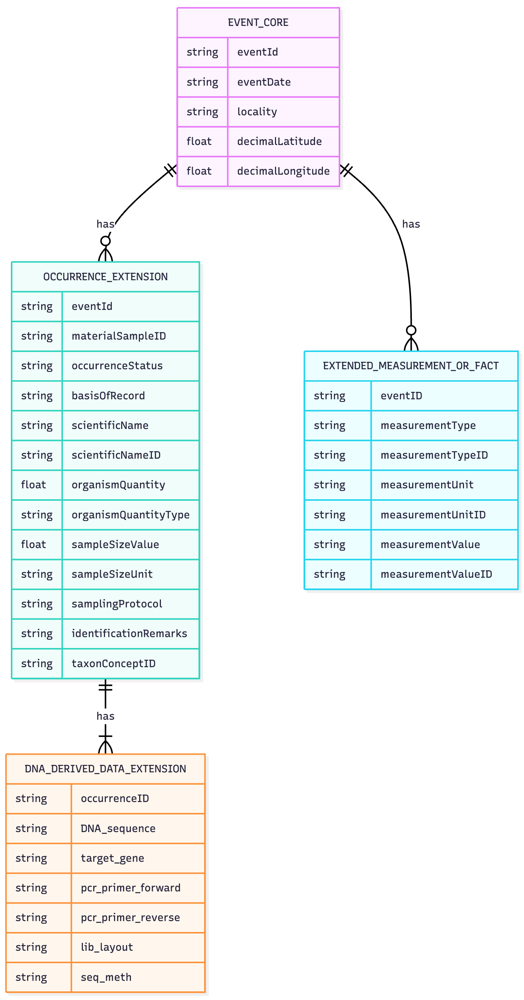
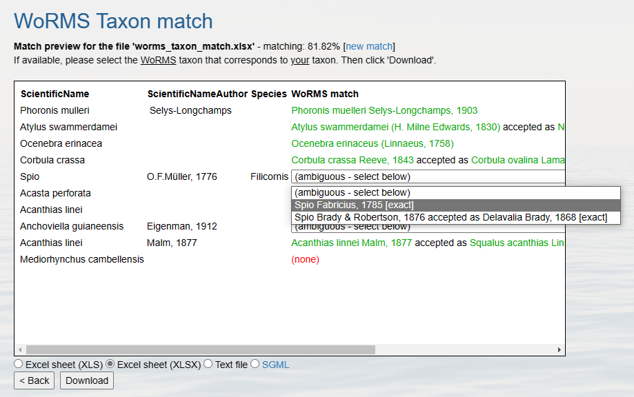

Data Standards for eDNA: DwC-A, MIxS, and the DNA Derived Data Extension
Darwin Core + the DNA Derived Data extension
Darwin Core (DwC) is a shared vocabulary for biodiversity data — a standard set of term names (scientificName, eventDate, decimalLatitude, and so on) so that data from any source can be combined and compared. The DNA Derived Data extension adds terms from MIxS (Minimum Information about any (x) Sequence) to capture sequences, primers, and methods. It was developed jointly by GBIF, OBIS, and the genomics community, so the same fields used for INSDC/GenBank submissions can be reused here.
A published dataset takes the form of a Darwin Core Archive (DwC-A): a zip file containing a few linked pieces:
meta.xml— links all the tables togethereml.xml— dataset-level metadata (who, what, where, when, how)occurrence.csv— the occurrence records (the core table)dna_derived.csv— the DNA extension, linked to occurrence byoccurrenceID

For the full specification and worked examples, see the DNA publishing guide, Publishing DNA-derived data through biodiversity data platforms, produced jointly by GBIF and OBIS.
Which data category fits your data?
Before mapping any fields, figure out which of GBIF’s five DNA data categories describes your dataset:
| # | Category | Example |
|---|---|---|
| 1 | DNA-derived occurrences | Metabarcoding (ASVs/OTUs assigned to taxa) |
| 2 | Enriched occurrences | Voucher specimen + barcoded |
| 3 | Targeted species detection | qPCR / ddPCR assays |
| 4 | Name references | Sequence in GenBank only |
| 5 | Metadata only | Dataset without sequences |
Categories 1 and 3 are by far the most common for eDNA researchers: Category 1 covers metabarcoding, Category 3 covers targeted detection methods like qPCR/ddPCR where no sequences are produced. Use the GBIF decision tree if you’re not sure which applies to you. The rest of this episode focuses on Category 1 (metabarcoding), which is what the exercise dataset in the next episode represents.
From raw outputs to long format
DNA data is more complex than a simple latitude/longitude + species name record. A typical metabarcoding pipeline produces:
| File | Content |
|---|---|
| OTU/ASV table | Sequences × samples (read counts) |
| Taxonomy table | Sequence ID → taxon assignment |
| Sample metadata | Location, date, method |
| FASTA file | The actual DNA sequences |
The core transformation to remember for the rest of this training:
One row = one unique sequence in one sample = one occurrence record

The most common stumbling block when formatting eDNA data is exactly this “wide to long” transformation — turning an ASV table with one column per sample into one row per detection. We’ll do this transformation by hand with tidyr::gather() in the next episode; if you’re processing many datasets, the Metabarcoding Data Toolkit can automate it for common pipeline outputs.
Key fields to include
Occurrence core
Mandatory fields
occurrenceID— unique, stable IDscientificName— matched via WoRMSbasisOfRecord="MaterialSample"eventDate,decimalLatitude,decimalLongitudeoccurrenceStatus="present"
Strongly recommended fields
scientificNameID(WoRMS AphiaID)organismQuantity(read count of the sequence)organismQuantityType="DNA sequence reads"associatedSequences(link to e.g. GenBank/ENA accession)sampleSizeValue/sampleSizeUnit(total reads in the sample)samplingProtocol(link to your SOP)
DNA Derived Data extension
DNA_sequence— the ASV/OTU sequence itselftarget_gene— e.g."COI","18S rRNA"pcr_primer_name_forward/pcr_primer_name_reverseseq_meth— e.g."Illumina MiSeq"otu_class_appr— e.g."DADA2 v1.18"otu_db— the reference database usedsop— link to your protocol

More detail: manual.obis.org/dna_data.html#quick-start-guide.
Every marine occurrence should ideally carry a WoRMS AphiaID as its scientificNameID. But sequences that can’t be identified shouldn’t be dropped — include them with the highest taxonomic rank you can confidently assign (see Taxon matching below), since they can be re-identified later as reference databases improve.
Table structure options
There are two common ways to structure your tables:
Option A — Occurrence Core
occurrence.csv
└── dna_derived.csv (linked via occurrenceID)
└── emof.csv (linked via occurrenceID)Option B — Event Core (recommended for eDNA)
event.csv
└── occurrence.csv (linked via eventID)
└── dna_derived.csv (linked via occurrenceID)
└── emof.csv (linked via eventID or occurrenceID)Why Event Core? Sample-level metadata — location, date, method — is recorded once per sampling event rather than repeated on every row. For a survey with 500 samples × 2,000 ASVs, that’s 1 million occurrence rows: repeating location and date on every single one is wasteful and error-prone.

Concretely, a dataset built this way is three (or four) linked tables:
Event Core — the where, when & how of collection
eventID,eventDatedecimalLatitude,decimalLongitudeenv_medium,samplingProtocol
Occurrence Extension — what organism was detected
occurrenceID,eventIDscientificName,taxonID(WoRMS)basisOfRecord,occurrenceStatus
DNA Derived Data Ext. — the molecular context
occurrenceIDDNA_sequence,target_genepcr_primer_forward/reverse,seq_meth
Tables are linked by eventID and occurrenceID. An optional fourth table, eMoF, carries measurements and facts (see below).
In the next episode you’ll build an Occurrence Core dataset (Option A) — it’s simpler for a first dataset with only two samples. Once you’re comfortable with the mapping, switching to an Event Core is mostly a matter of splitting the sample-level columns into their own table.
The eMoF extension
The Extended MeasurementOrFact (eMoF) table records all types of measurements — abiotic, biotic, environmental, or related to sampling effort — in long format, linked to an eventID and/or occurrenceID. Each measurement is one row with a measurementType, measurementValue, and measurementUnit:
| eventID | occurrenceID | measurementType | measurementValue | measurementUnit |
|---|---|---|---|---|
| YEARsite1samp1 | temperature | 25 | °C |
| measurementTypeID | measurementUnitID |
|---|---|
http://vocab.nerc.ac.uk/collection/P01/current/TEMPPR01/ |
http://vocab.nerc.ac.uk/collection/P06/current/UPAA/ |
Linking sampling info to eventID instead of repeating it per occurrence decreases duplication — the same principle as the Event Core structure above.
Controlled vocabulary
Wherever possible, attach a controlled vocabulary identifier to each eMoF column:
measurementTypeIDmeasurementUnitIDmeasurementValueID(for non-numeric values)

Using identifiers rather than free text facilitates data understanding, enables data aggregation across datasets, and decreases the potential for misuse or misinterpretation. OBIS recommends using NERC vocabulary terms wherever a suitable one exists.
Taxon matching with WoRMS
Every scientificName in a marine dataset should resolve to a WoRMS (World Register of Marine Species) AphiaID. You can do this:
- Interactively with the WoRMS Taxon Match Tool
- Programmatically, with
obistools::match_taxa,worrms::wm_records_taxamatch, orpywormsin Python

Use the highest-rank taxon that does have a match (e.g. family or order) rather than leaving the record out. Keep the sequence — it can be re-identified later as reference databases improve.
We’ll put this into practice with obistools::match_taxa() on a real dataset in the next episode.
Key metadata by data type
The fields you need to capture depend on which stage of the workflow — and which method — produced your data.
eDNA metabarcoding (Category 1), from field to taxonomy:
- ⛵ Field sampling — date, coordinates, environmental measurements
- 🧬 DNA extraction — concentration, extraction method, extracted amount
- 🧪 Biomarker/PCR — primer sequence and reference, target gene, PCR conditions, product length, concentration
- 💻 Sequences & taxonomy — sequencing platform, library layout, public repository ID (NCBI/ENA), taxonomy, annotation confidence and reference, pipeline, reference library
Quantitative PCR / qPCR (Category 3) adds detection-specific fields on top of field sampling and DNA extraction:
- 🎯 Target & quantity — target gene region, primers, copy number, concentration, limit of detection (LOD), quantification cycle (Cq), baseline
qPCR differs from metabarcoding in one important way: because you’re detecting one specific taxon, scientificName and scientificNameID are required from the start (rather than being resolved after the fact via taxon matching). Both use basisOfRecord = "MaterialSample".
Quality control, before you publish
Whichever structure and category you use, check the following before publishing:
- ✅ Taxonomy matched to WoRMS (AphiaID required for marine taxa)
- ✅ Coordinates in decimal degrees, and actually in the ocean
- ✅ Dates in ISO 8601 format (
YYYY-MM-DD) - ✅ Unique, stable
occurrenceIDandeventIDvalues - ✅ Table linkages consistent (
eventID,occurrenceIDmatch across tables)
| Tool | What it checks |
|---|---|
obistools (R package) |
Taxonomy, geography, required fields |
| GBIF data validator | Darwin Core Archive structure |
| WoRMS taxon match | Scientific names → AphiaIDs |
We’ll run these checks with real code on a real dataset in Episode 4.